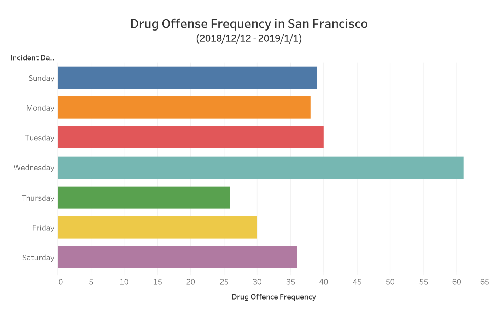

Visualization1
Visualization1 Description
Chart 1 visualizes the larceny theft frequency in San Francisco measured by 24 hours per day from 2018/12/1 - 2019/1/1. For example, the second bar represents the theft frequency from 1:00 am to 2:00 am, and the third red bar represents the theft frequency from 2:00 am to 3:00 am. As the bar chart visualized, the peak larceny theft frequency is from 18:00 pm to 19:00 pm.
Visualization2
Visualization2 Description
Chart 2 visualizes the drug offense frenquency in San Francisco measured by 7 days per week from 2018/12/1 - 2019/1/1. Each color represent a different day of a week. For example, the blue bar, which is the drug offense on Sunday is the least in seven days.
Visualization3
Visualization3 Description
Chart 3 visualizes 10 regions in San Francisco which has the top 10 total incident count during 2018/12/1 - 2019/1/1. Each seperate color represents the total count of the incident happened in a different region. For example, the dark yellow part in the pie chart measures that here are 15,372 incidents happened in Financial District/South Beach during 2018/12/1 - 2019/1/1.
Prototypes

Interpretation
If appropriate, provide a brief discussion of how to interpret this visualization (e.g. how the data is encoded) and how to interact with this visualization. Some of this discussion may not be necessary depending on the legends provided with the visualization.
Discussion
If appropriate, provide a brief discussion of the primary goal and findings of the visualization, any challenges encountered creating the visualization, and any other context as required by the assignment.
Credit
If appropriate, provide credit for the dataset, any code used, and design inspirations here. Unsufficient discussion here is a violation of the academic honesty policy and may result in an F grade for the assignment or the entire course.
Expected Grade
| Done? | Letter | Justification |
|---|---|---|
| D | If appropriate, provide a brief justification for this level of functionality. Clearly state if this level was not implemented. | |
| C | If appropriate, provide a brief justification for this level of functionality. Clearly state if this level was not implemented. | |
| B | If appropriate, provide a brief justification for this level of functionality. Clearly state if this level was not implemented. | |
| A | If appropriate, provide a brief justification for this level of functionality. Clearly state if this level was not implemented. |
Any additional context you want to provide regarding functionality and grading can be included here. This may include any challenges or bugs you ran into that prevented you from implementing additional functionality.